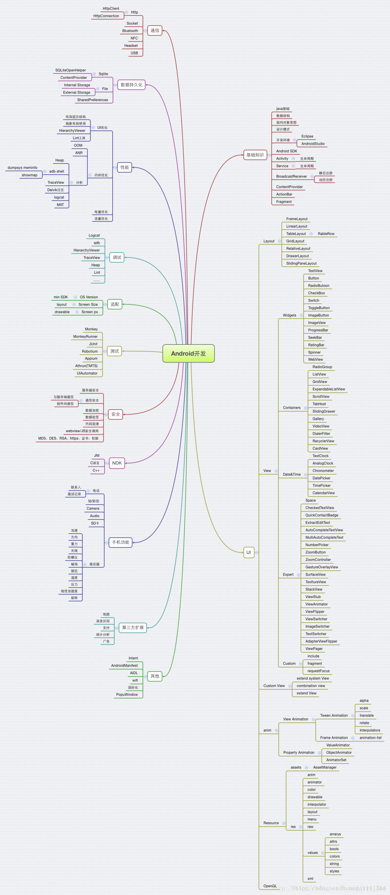

- 基础知识 – 四大组件（生命周期，使用场景，如何启动）
- java基础 – 数据结构，线程，mvc框架
- 通信 – 网络连接（HttpClient，HttpUrlConnetion），Socket
- 数据持久化 – SQLite，SharedPreferences，ContentProvider
- 性能优化 – 布局优化，内存优化，电量优化
- 安全 – 数据加密，代码混淆，WebView/Js调用，https
- UI– 动画
- 其他 – JNI，AIDL，Handler，Intent等
- 开源框架 – Volley，Gilde，RxJava等（简历上写你会的，用过的）
- 拓展 – Android6.0/7.0/8.0特性，kotlin语言，I/O大会